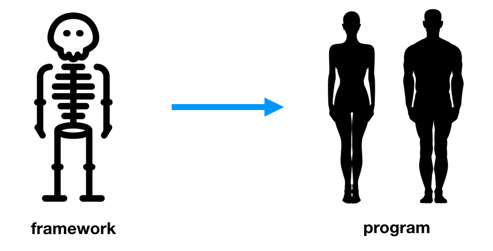

아키텍처의 테마
소프트웨어 아키텍처는 시스템의 유스케이스를 지원하는 구조
{: width=”45%” height=”30%”}
소프트웨어 애플리케이션의 아키텍처도 애플리케이션의 유스케이스에 대해 소리쳐야 한다.
또한 아키텍처는 프레임워크에 대한 것이 아니다. 아키텍처를 프레임워크로부터 제공받아서는 안된다.
아키텍처의 목적
- 좋은 아키텍처는 유스케이스를 중심에 두기 때문에 프레임워크나 도구, 환경에 전혀 구애받지 않고 유스케이스를 지원하는 구조를 아무런 문제 없이 기술한다.
- 또한 좋은 소프트웨어 아키텍처는 프레임워크, 데이터베이스, 웹서버 그리고 개발 환경 문제나 도구에 대해 결정을 미룰 수 있도록 만든다.
- 쉽게 번복할 수 있도록 한다.
좋은 아키텍처는 유스케이스에 중점을 두며, 지엽적인 관심사에 대한 결합은 분리한다.
프레임 워크는 도구일 뿐, 삶의 방식은 아니다.
{: width=”45%” height=”30%”}
프레임 워크는 도움이 되지만 비용이 든다. 프레임워크를 어떻게 사용할지, 사용하지 않으려면 어떻게 해야할지를 고민해야 한다. 어떻게 하면 아키텍처를 유스케이스에 중점을 둔 채 그대로 보존할 수 있을지를 생각해야 한다. 프레임워크가 아키텍처의 중심을 차지하는 일을 막을 수 있는 전략을 개발해야 한다.
테스트하기 쉬운 아키텍처
아키텍처는 유스케이스를 최우선으로 두고, 프레임워크와는 적당한 거리를 둬야 한다. 그렇게 되려면 필요한 유유스케이스에 전부에 대해 단위테스트를 할 수 있어야 한다.
- 테스트를 돌리는데 웹서버가 반드시 필요한 상황이 되어서는 안된다.
- 데이터 베이스가 반드시 연결되어야 하지 않는다.
- 엔티티 객체는 방드시 오래된 방식의 간단한 객체여야 한다.
- 유스케이스 객체가 엔티티 객체를 조작해야 한다.
- 프레임 워크로 인한 어려움 없이 모두를 테스트 할 수 있어야 한다.
결론
아키텍처는 시스템을 이야기해야 하며, 시스템에 적용된 프레임워크에 대해 이야기 해서는 안된다.